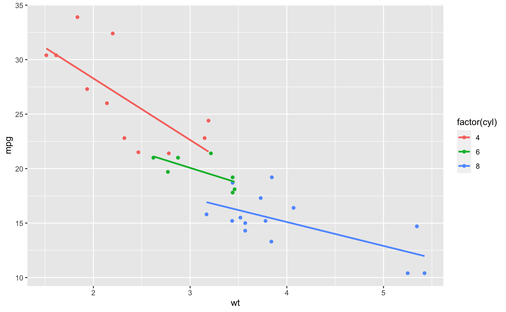

Hugodown Rmd
| Format | Plain Markdown | Hugodown .Rmd | Blogdown .Rmarkdown |
|---|---|---|---|
| Live Post | here | here | here |
| Source HTML | here | here | here |
| Source .Rmd/.Rmarkdown | here | here | |
| Source Markdown | here | here | here |
Code
knitr::opts_chunk$set(
fig.path = "plots/", # for leaf bundles to work nicely
cache = FALSE,
fig.retina = 2,
fig.width = 8.5,
echo = TRUE,
message = FALSE, warning = FALSE, error = FALSE,
fig.align = "center",
out.width = "95%"
)This is a test of {{< pkg “hugodown” >}}.
Code with/-out Output
my_packages <- rownames(installed.packages())
n_packages <- length(my_packages)And some filler text between chunks.
n_packages
#> [1] 407
tail(tibble::enframe(my_packages))
#> # A tibble: 6 x 2
#> name value
#> <int> <chr>
#> 1 402 yaml
#> 2 403 yardstick
#> 3 404 ymlthis
#> 4 405 zeallot
#> 5 406 zip
#> 6 407 zooPlots
- The entire chunk is contained in
<pre>tags :( - Tabular display of code with line numbers is set in config, but not applied here
library(ggplot2)
ggplot(mtcars, aes(x = wt, y = mpg, color = factor(cyl))) +
geom_point() +
geom_smooth(method = lm, se = FALSE)

Table
library(dplyr)
sessioninfo::session_info()$packages %>%
as_tibble() %>%
filter(package %in% c("hugodown", "dplyr", "ggplot2")) %>%
select(package, loadedversion, source) %>%
knitr::kable(caption = "A neato little table")
| package | loadedversion | source |
|---|---|---|
| dplyr | 1.0.0 | CRAN (R 4.0.0) |
| ggplot2 | 3.3.1 | CRAN (R 4.0.0) |
| hugodown | 0.0.0.9000 | Github (r-lib/hugodown@ade05cd) |
Shortcodes
Inline
Inline shortcode without tweaks: Hello {{< pkg “hugodown” >}}.
Using blogdown::shortcode is not well suited in
Block-level
Here’s a figure shortcode:
{{< figure src="plots/a-plot-1.png” alt="" caption="" >}}
The same shortcode with blogdown::shortcode
Footnotes
This is a footnote in ^[inline format] as used by pandoc but not supported by Hugo’s Goldmark 1.
Here’s a reference-style footnote 2.
Math and stuff
(Rmd: Have not applied fixes to make it work yet)
This is text with inline math $\sum_{n=1}^{\infty} 2^{-n} = 1$ and with math blocks:
$$ \sum_{n=1}^{\infty} 2^{-n} = 1 $$
| Heading | Another heading |
|---|---|
| text | text |
| text | text |
| text | text |
Session Info
Session Info
sessioninfo::session_info()$packages
#> package * version date lib source
#> assertthat 0.2.1 2019-03-21 [1] CRAN (R 4.0.0)
#> backports 1.1.7 2020-05-13 [1] CRAN (R 4.0.0)
#> blogdown 0.19 2020-05-22 [1] CRAN (R 4.0.0)
#> cli 2.0.2 2020-02-28 [1] CRAN (R 4.0.0)
#> colorspace 1.4-1 2019-03-18 [1] CRAN (R 4.0.0)
#> crayon 1.3.4 2017-09-16 [1] CRAN (R 4.0.0)
#> digest 0.6.25 2020-02-23 [1] CRAN (R 4.0.0)
#> downlit 0.0.0.9000 2020-06-04 [1] Github (r-lib/downlit@f9eb6b4)
#> dplyr * 1.0.0 2020-05-29 [1] CRAN (R 4.0.0)
#> ellipsis 0.3.1 2020-05-15 [1] CRAN (R 4.0.0)
#> evaluate 0.14 2019-05-28 [1] CRAN (R 4.0.0)
#> fansi 0.4.1 2020-01-08 [1] CRAN (R 4.0.0)
#> farver 2.0.3 2020-01-16 [1] CRAN (R 4.0.0)
#> fs 1.4.1 2020-04-04 [1] CRAN (R 4.0.0)
#> generics 0.0.2 2018-11-29 [1] CRAN (R 4.0.0)
#> ggplot2 * 3.3.1 2020-05-28 [1] CRAN (R 4.0.0)
#> glue 1.4.1 2020-05-13 [1] CRAN (R 4.0.0)
#> gtable 0.3.0 2019-03-25 [1] CRAN (R 4.0.0)
#> here 0.1 2017-05-28 [1] CRAN (R 4.0.0)
#> highr 0.8 2019-03-20 [1] CRAN (R 4.0.0)
#> htmltools 0.4.0 2019-10-04 [1] CRAN (R 4.0.0)
#> hugodown 0.0.0.9000 2020-06-08 [1] Github (r-lib/hugodown@ade05cd)
#> jsonlite 1.6.1 2020-02-02 [1] CRAN (R 4.0.0)
#> knitr 1.28 2020-02-06 [1] CRAN (R 4.0.0)
#> labeling 0.3 2014-08-23 [1] CRAN (R 4.0.0)
#> lattice 0.20-41 2020-04-02 [1] CRAN (R 4.0.0)
#> lifecycle 0.2.0 2020-03-06 [1] CRAN (R 4.0.0)
#> magrittr 1.5 2014-11-22 [1] CRAN (R 4.0.0)
#> Matrix 1.2-18 2019-11-27 [1] CRAN (R 4.0.0)
#> mgcv 1.8-31 2019-11-09 [1] CRAN (R 4.0.0)
#> munsell 0.5.0 2018-06-12 [1] CRAN (R 4.0.0)
#> nlme 3.1-148 2020-05-24 [1] CRAN (R 4.0.0)
#> pillar 1.4.4 2020-05-05 [1] CRAN (R 4.0.0)
#> pkgconfig 2.0.3 2019-09-22 [1] CRAN (R 4.0.0)
#> purrr 0.3.4 2020-04-17 [1] CRAN (R 4.0.0)
#> R6 2.4.1 2019-11-12 [1] CRAN (R 4.0.0)
#> Rcpp 1.0.4.6 2020-04-09 [1] CRAN (R 4.0.0)
#> reticulate 1.16 2020-05-27 [1] CRAN (R 4.0.0)
#> rlang 0.4.6 2020-05-02 [1] CRAN (R 4.0.0)
#> rmarkdown 2.2 2020-05-31 [1] CRAN (R 4.0.0)
#> rprojroot 1.3-2 2018-01-03 [1] CRAN (R 4.0.0)
#> rstudioapi 0.11 2020-02-07 [1] CRAN (R 4.0.0)
#> scales 1.1.1 2020-05-11 [1] CRAN (R 4.0.0)
#> sessioninfo 1.1.1 2018-11-05 [1] CRAN (R 4.0.0)
#> stringi 1.4.6 2020-02-17 [1] CRAN (R 4.0.0)
#> stringr 1.4.0 2019-02-10 [1] CRAN (R 4.0.0)
#> tibble 3.0.1 2020-04-20 [1] CRAN (R 4.0.0)
#> tidyselect 1.1.0 2020-05-11 [1] CRAN (R 4.0.0)
#> utf8 1.1.4 2018-05-24 [1] CRAN (R 4.0.0)
#> vctrs 0.3.1 2020-06-05 [1] CRAN (R 4.0.0)
#> withr 2.2.0 2020-04-20 [1] CRAN (R 4.0.0)
#> xfun 0.14 2020-05-20 [1] CRAN (R 4.0.0)
#> yaml 2.2.1 2020-02-01 [1] CRAN (R 4.0.0)
#>
#> [1] /Library/Frameworks/R.framework/Versions/4.0/Resources/library